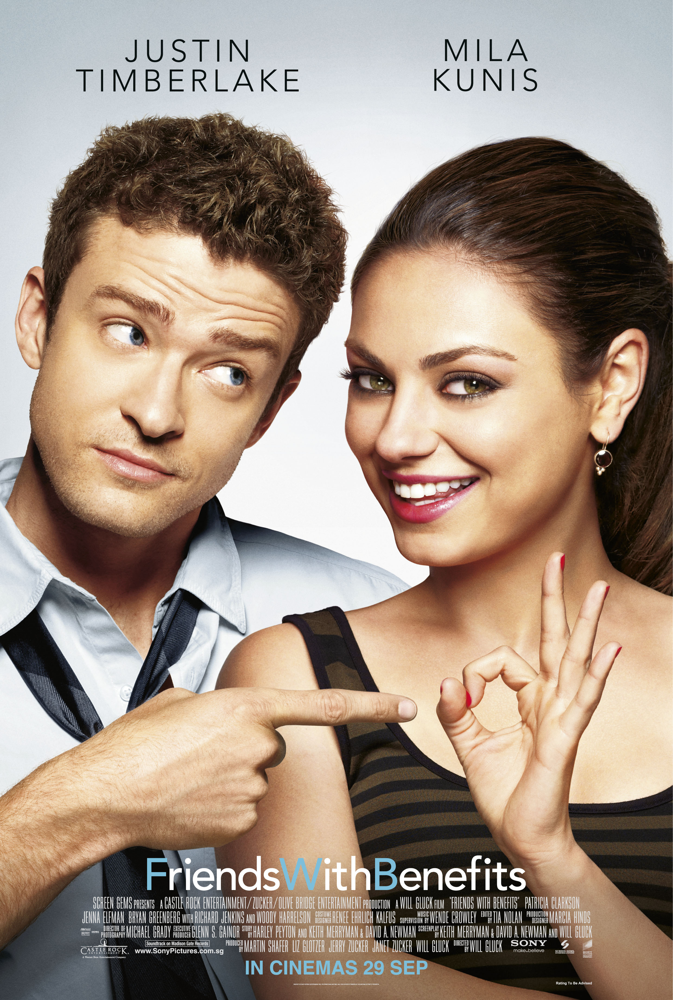
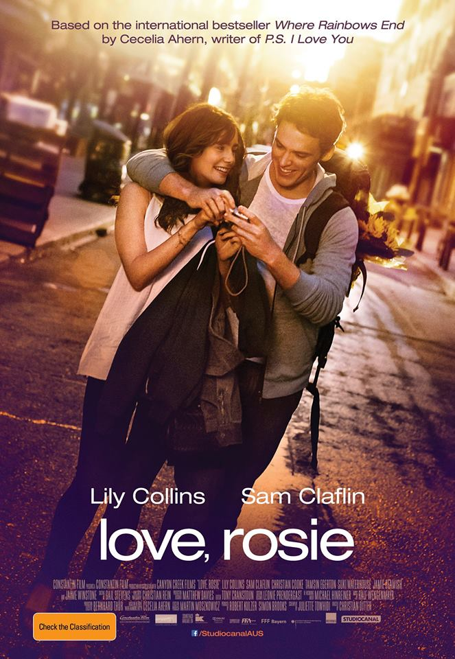
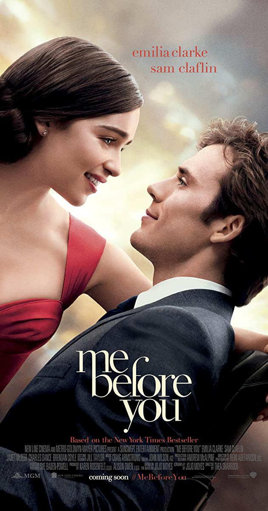
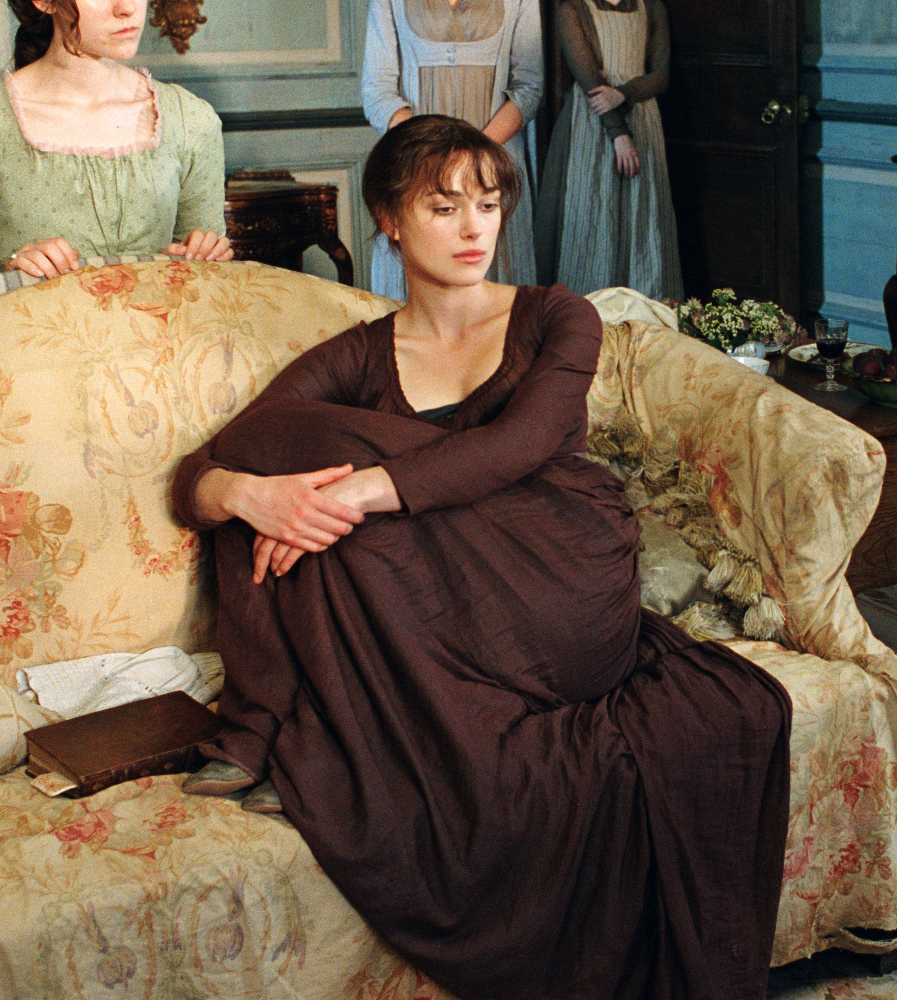

5.1: Friends with Benefits
Ratings : 🌟 6.5
Genre :ComedyRomance
Release Date : 22 July 2011
Watch-Time : 1h 49min.
Director : Will Gluck
Starring : Justin Timberlake, Mila Kunis, Patricia Clarkson, Jenna Elfman, Bryan Greenberg, Richard Jenkins, Woody Harrelson
Box-Office : $150.4 million
Storyline:
Jamie Rellis (Mila Kunis) is a New York City head-hunter trying to sign Los Angeles-based art director Dylan Harper (Justin Timberlake) for her client. When he takes the job and makes the move, they quickly become friends. Their friendship turns into a friendship with benefits, but with Jamie's emotionally damaged past and Dylan's history of being emotionally unavailable, they have to try to not fall for each other the way Hollywood romantic comedies dictate.
5.2: The Holiday

Ratings : 🌟 6.9
Genre : ComedyRomance
Release Date : 8 December 2006
Watch-Time : 2h 16min.
Director : Nancy Meyers
Starring : Cameron Diaz, Kate Winslet, Jude Law, Jack Black, Eli Wallach, Edward Burns, Rufus Sewell
Box-Office : $205.1 million
Storyline:
In London, Iris Simpkins writes a wedding column in a newspaper and nurtures an unrequited love for her colleague Jasper Bloom. Near Christmas, she is informed that Jasper is engaged to marry another colleague, and her life turns upside down. In Los Angeles, the movie-trailers maker Amanda Woods has just split with her unfaithful boyfriend Ethan and wants to forget him. Through a house exchange website, Amanda impulsively swaps her mansion for Iris' cottage in Surrey for the holidays. While in Surrey, Amanda meets Iris' brother and book editor Graham and they fall in love with each other. Meanwhile, Iris meets her new next door neighbor the ninety year old screenplay writer Arthur, who helps her retrieve her self-esteem, and the film composer Miles, with whom she falls in love.
4.1: Crazy Rich Asians
Ratings : 🌟 6.9
Genre : DramaRomanceComedy
Release Date : 15 August 2018
Watch-Time : 2h.
Director : Jon M. Chu
Starring : Constance Wu, Henry Golding, Gemma Chan, Lisa Lu, Awkwafina, Ken Jeong, Michelle Yeoh
Box-Office : $238.5 million
Storyline:
Rachel Chu, an American-born Chinese NYU professor, travels with her boyfriend, Nick to his hometown of Singapore for his best friend's wedding. Before long, his secret is out: Nick's family is wealthy, and he's considered the most eligible bachelor in Asia. Every single woman is incredibly jealous of Rachel and wants to bring her down.
4.2: Love, Rosie
Ratings : 🌟 7.2
Genre : ComedyRomance
Release Date : 24 October 2014
Watch-Time : 1h 42min.
Director : Christian Ditter
Starring : Lily Collins, Sam Claflin, Christian Cooke, Tamsin Egerton, Suki Waterhouse, Jamie Beamish, Jaime Winstone
Box-Office : $25.5 million
Storyline:
From the age of 5 Rosie Dunne and Alex Stewart have been best friends, as they take on life they just end up getting separated time and time again. When it comes to love it's just everyone else but each other.... But when will they realise they are meant to be together?
3.1: Me Before You
Ratings : 🌟 7.4
Genre : DramaRomance
Release Date : 3 June 2016
Watch-Time : 1h 46min.
Director : Thea Sharrock
Starring : Emilia Clarke, Sam Claflin, Janet McTeer, Charles Dance, Brendan Coyle
Box-Office : $208.3 million
Storyline:
Lou Clark knows lots of things. She knows how many footsteps there are between the bus stop and home. She knows she likes working in The Buttered Bun tea shop and she knows she might not love her boyfriend Patrick. What Lou doesn't know is she's about to lose her job or that knowing what's coming is what keeps her sane. Will Traynor knows a road accident took away his desire to live. He knows everything feels very small and rather joyless now and he knows exactly how he's going to put a stop to that. What Will doesn't know is that Lou is about to burst into his world in a riot of color. And neither of them knows they're going to change each other for all time.
3.2: About Time

Ratings : 🌟 7.8
Genre : ComedyRomanceDrama
Release Date : 8 November 2013
Watch-Time : 2h 3min.
Director : Richard Curtis
Starring : Domhnall Gleeson, Rachel McAdams, Bill Nighy, Tom Hollander, Margot Robbie
Box-Office : $88.5 million
Storyline:
At the age of 21, Tim Lake (Domhnall Gleeson) discovers he can travel in time... The night after another unsatisfactory New Year party, Tim's father (Bill Nighy) tells his son that the men in his family have always had the ability to travel through time. Tim can't change history, but he can change what happens and has happened in his own life-so he decides to make his world a better place...by getting a girlfriend. Sadly, that turns out not to be as easy as you might think. Moving from the Cornwall coast to London to train as a lawyer, Tim finally meets the beautiful but insecure Mary (Rachel McAdams). They fall in love, then an unfortunate time-travel incident means he's never met her at all. So they meet for the first time again-and again-but finally, after a lot of cunning time-traveling, he wins her heart. Tim then uses his power to create the perfect romantic proposal, to save his wedding from the worst best-man speeches
2.1: Pride & Prejudice
Ratings : 🌟 7.8
Genre : DramaRomance
Release Date : 23 November 2005
Watch-Time : 2h 9min.
Director : Joe Wright
Starring : Keira Knightley, Matthew Macfadyen, Brenda Blethyn, Donald Sutherland, Tom Hollander, Rosamund Pike, ena Malone, Judi Dench
Box-Office : $121.6 million
Storyline:
The story is based on Jane Austen's novel about five sisters - Jane (Rosamund Pike), Elizabeth (Keira Knightley), Mary (Talulah Riley), Kitty (Carey Mulligan), and Lydia Bennet (Jena Malone) - in Georgian England. Their lives are turned upside down when wealthy young Mr. Bingley (Simon Woods) and his best friend, Mr. Darcy (Matthew Macfadyen), arrive in their neighborhood.
2.2: The Fault in Our Stars
Ratings : 🌟 7.7
Genre : DramaRomance
Release Date : 6 June 2014
Watch-Time : 2h 6min.
Director : Josh Boone
Starring : Shailene Woodley, Ansel Elgort, Laura Dern, Sam Trammell, Nat Wolff, Willem Dafoe
Box-Office : $307.2 million
Storyline:
Hazel and Augustus are two teenagers who share an acerbic wit, a disdain for the conventional, and a love that sweeps them on a journey. Their relationship is all the more miraculous, given that Hazel's other constant companion is an oxygen tank, Gus jokes about his prosthetic leg, and they meet and fall in love at a cancer support group.
1.1: Before Sunrise

Ratings : 🌟 8.1
Genre : DramaRomance
Release Date : 27 January 1995
Watch-Time : 1h 41min.
Director : Richard Linklater
Starring : Ethan Hawke, Julie Delpy, Andrea Eckert
Box-Office : $5.5 million
Storyline:
American tourist Jesse and French student Celine meet by chance on the train from Budapest to Vienna. Sensing that they are developing a connection, Jesse asks Celine to spend the day with him in Vienna, and she agrees. So they pass the time before his scheduled flight the next morning together. How do two perfect strangers connect so intimately over the course of a single day? What is that special thing that bonds two people so strongly? As their bond turns to love, what will happen to them the next morning when Jesse flies away?
1.2: Titanic

Ratings : 🌟 7.8
Genre : DramaRomance
Release Date : 19 December 1997
Watch-Time : 3h 14min.
Director : James Cameron
Starring : Leonardo DiCaprio, Kate Winslet, Billy Zane, Kathy Bates, Frances Fisher, Bernard Hill, Jonathan Hyde, Danny Nucci, David Warner, Bill Paxton
Box-Office : $2.195 billion
Storyline:
84 years later, a 100 year-old woman named Rose DeWitt Bukater tells the story to her granddaughter Lizzy Calvert, Brock Lovett, Lewis Bodine, Bobby Buell and Anatoly Mikailavich on the Keldysh about her life set in April 10th 1912, on a ship called Titanic when young Rose boards the departing ship with the upper-class passengers and her mother, Ruth DeWitt Bukater, and her fiancé, Caledon Hockley. Meanwhile, a drifter and artist named Jack Dawson and his best friend Fabrizio De Rossi win third-class tickets to the ship in a game. And she explains the whole story from departure until the death of Titanic on its first and last voyage April 15th, 1912 at 2:20 in the morning.